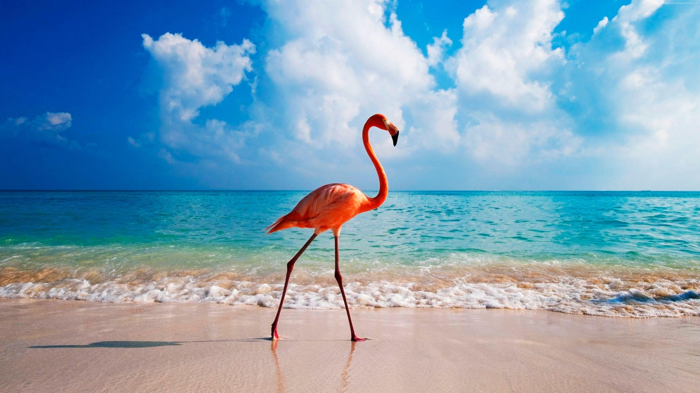

The Caribbean seawater is highly homogeneous. Take the monthly average temperature of the sea as an example, the annual change does not exceed 3°C (25°-28°C). In the past 50 years, the Caribbean Sea has gone through three different stages. It continued to cool before 1974. The coldest period occurred from 1974 to 1976. Before that, the temperature continued to rise at 0.6°C per year. The change in temperature is related to the Holy Infant-Southern Oscillation phenomenon and the anti-Holy Infant phenomenon. The salinity of the Caribbean Sea is 3.6%, the density is 1.0235-1.0240 103kg/m3, and the color of the sea water ranges from blue-green to green.
Most rivers in Central America flow into the Caribbean Sea, but most of the rivers in South America merge with the Orinoco River and flow into the Atlantic Ocean just south of Port of Spain.
The Caribbean Sea is also the sea with the most coastal countries. Among the more than 50 seas in the world, only the Mediterranean and the Caribbean have double-digit coastal countries. There are 17 coastal countries in the Mediterranean, and 20 in the Caribbean, including Guatemala, Honduras, Nicaragua, Costa Rica, Panama in Central America, Colombia and Venezuela in South America, Cuba in the Great Antilles, Haiti, the Dominican Republic, and Xiaoan Antigua and Barbuda, the Commonwealth of Dominica, Trinidad and Tobago on the Les Islands.
Most rivers in Central America flow into the Caribbean Sea, but most of the rivers in South America merge with the Orinoco River and flow into the Atlantic Ocean just south of Port of Spain.
The main imports and exports of the Caribbean Sea are the Yucatan Strait between the Yucatan Peninsula and the island of Cuba, the Windward Channel between Cuba and Hispaniola, and between Hispaniola and Puerto Rico. The Mona Strait, the Anegada Strait between the Virgin Islands and the Martin Strait, and the Dominica Strait north of Dominica. The water depth of each strait is above 1,000 meters.
The crust of the sea area is very unstable, surrounded by deep trenches and volcanic seismic zones. The ocean floor is divided into east and west by the wide Jamaica ridge; the Yucatan Basin and the Cayman Trench are located in the west, and are separated by the submarine mountains extending westward from the Maestra Mountains on the island of Cuba. The submarine mountains are formed by the peaks of the sea Big and Little Cayman and other islands. The depth of the Yucatan Basin is about 4000 meters, the average depth of the Cayman Trench is 5000 to 6000 meters, and the deepest point is 7680 meters. The east is divided into the Columbia Basin and the Venezuelan Basin by the Beata Ridge running northeast and southwest. The average depth of the Columbia Basin is about 3000 meters, and the deepest point is 4,535 meters; the Venezuelan Basin has an average depth of about 4500 meters and the deepest point is 5630 meters. The Jamaica Ridge extends southwest from Haiti and Jamaica to the east of Honduras and Nicaragua in Central America. The depth is generally about 500 meters, and more than half of it is less than 200 meters deep. The bottom of the Caribbean Sea is composed of Cenozoic sediments, the deeper ocean basins and trenches are mostly red clay, the sea platform is covered with coccidian ooze, and the seamounts and continental slopes are covered with pteropod ooze.